Rediseño de identidad, sitio web, impresos, catálogos y video para pautas de una asesoría de inversión inmobiliaria.
Ver el sitio ↗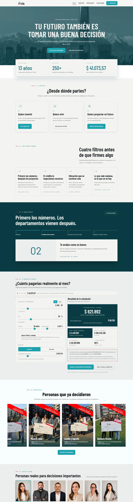

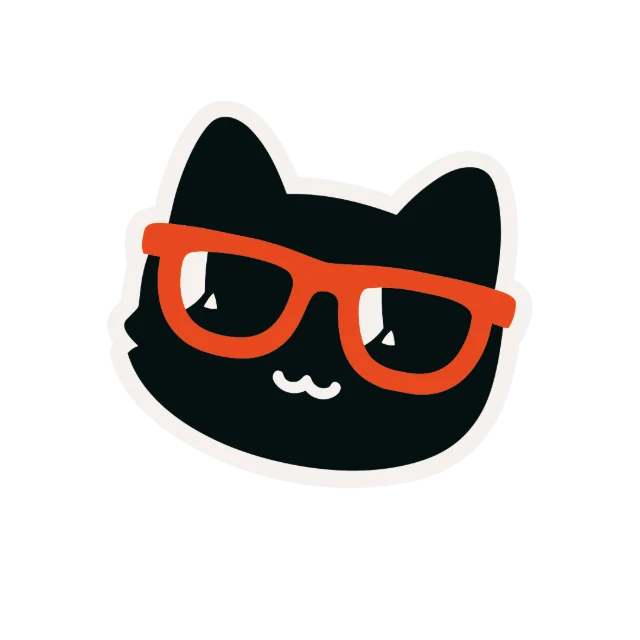
Inkkstudios 01 / 07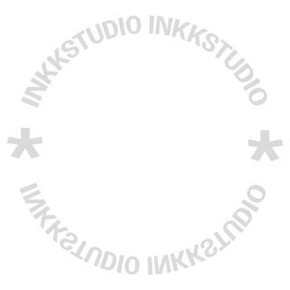
Servicios de marketing ✦ Rosario Fernández
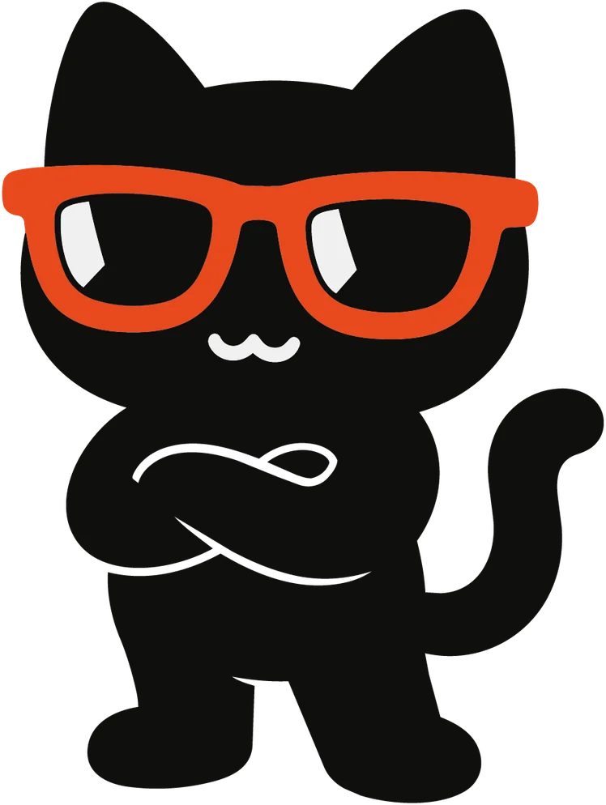
Diseño de piezas Webs Packaging Video & AdsCreatividad + actitud = impacto
Bajá ↓
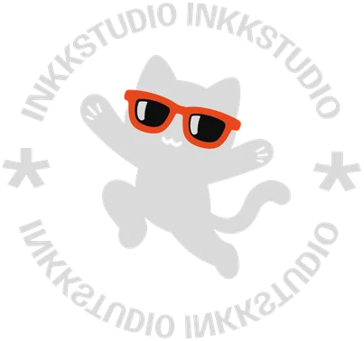
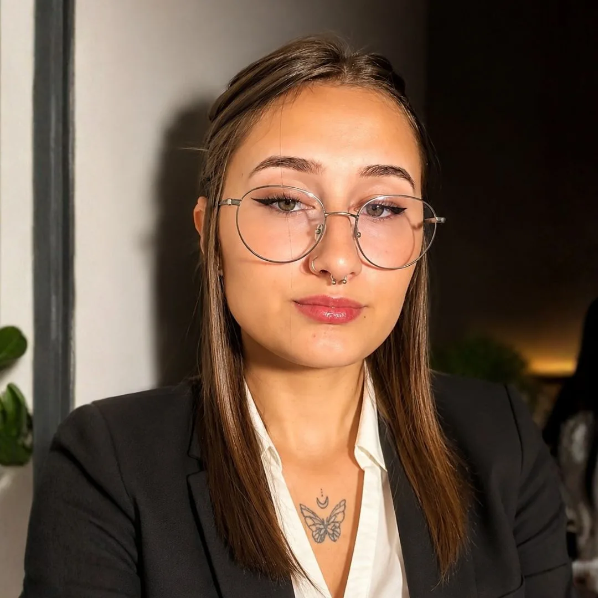
Hace más de tres años trabajo con marcas de Argentina, Chile, Ecuador y México. Me encargo de cómo se ve tu marca y de que llegue a la gente correcta: un estudio de diseño y marketing en un mismo lugar.
Descargar CV ↓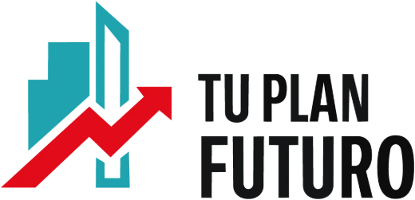
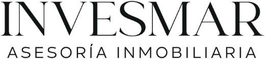
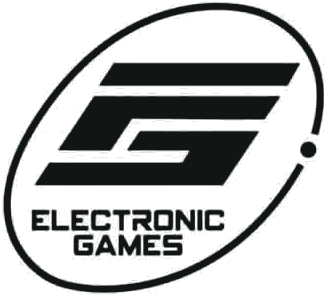
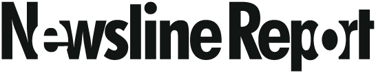
Inmobiliarias, gaming, tecnología, empleo y medios. Cada marca con su propio sistema visual, sostenido en el tiempo: desde la pieza diaria hasta la campaña completa.
Kit de trabajo
Diseño, edición y pauta con las herramientas que usan los equipos profesionales.
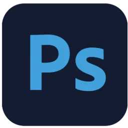
Photoshop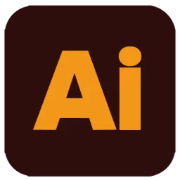
Illustrator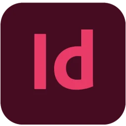
InDesign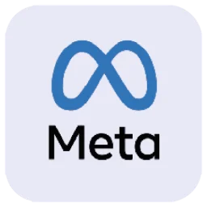
Meta Ads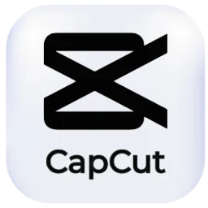
CapCut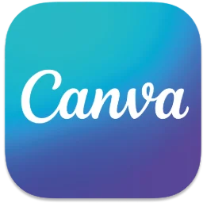
CanvaMomentos clave
Proyectos y marcas que marcaron el camino del estudio. Tocá cada uno para abrirlo.
Rediseño de identidad, sitio web, impresos, catálogos y video para pautas de una asesoría de inversión inmobiliaria.
Ver el sitio ↗
Redes de punta a punta: piezas, campañas en Meta Ads y edición de video para una tienda de consolas y videojuegos.
Ver piezas ↗

Contenido para Hot Sale y Cyber Monday: diseño, video y fotografía de producto para hardware gamer.
Ver fotografías ↗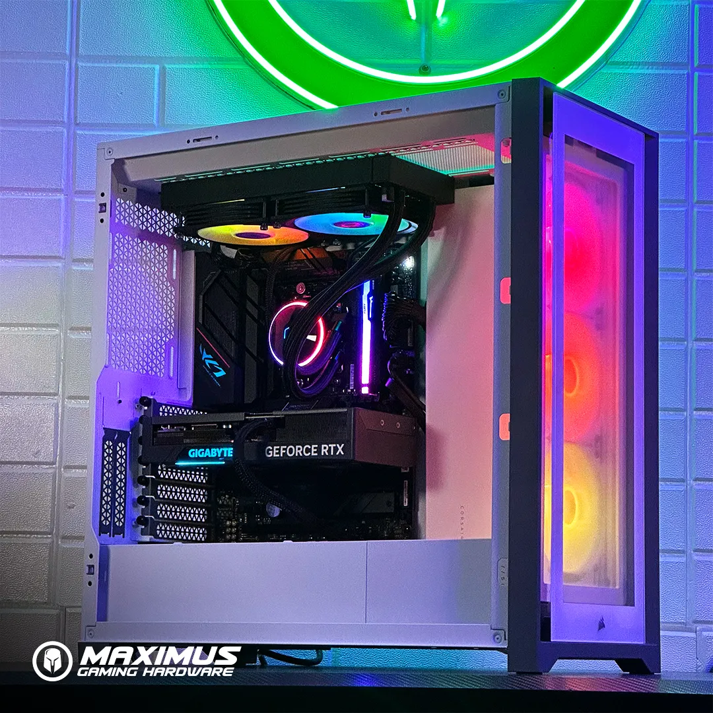
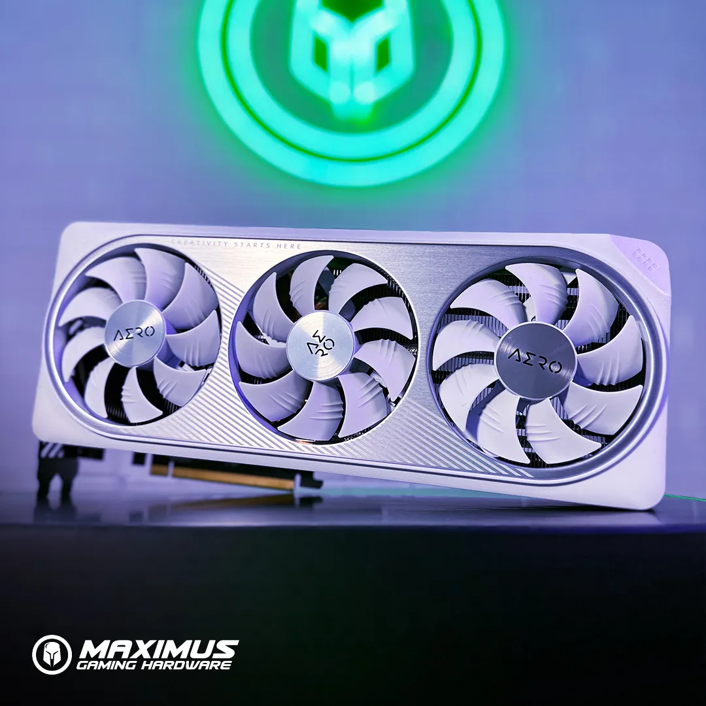
Gestión de redes y campañas de Meta Lead Ads en distintas regiones de Chile, con reportes en tiempo real por zona.
Ver la campaña ↗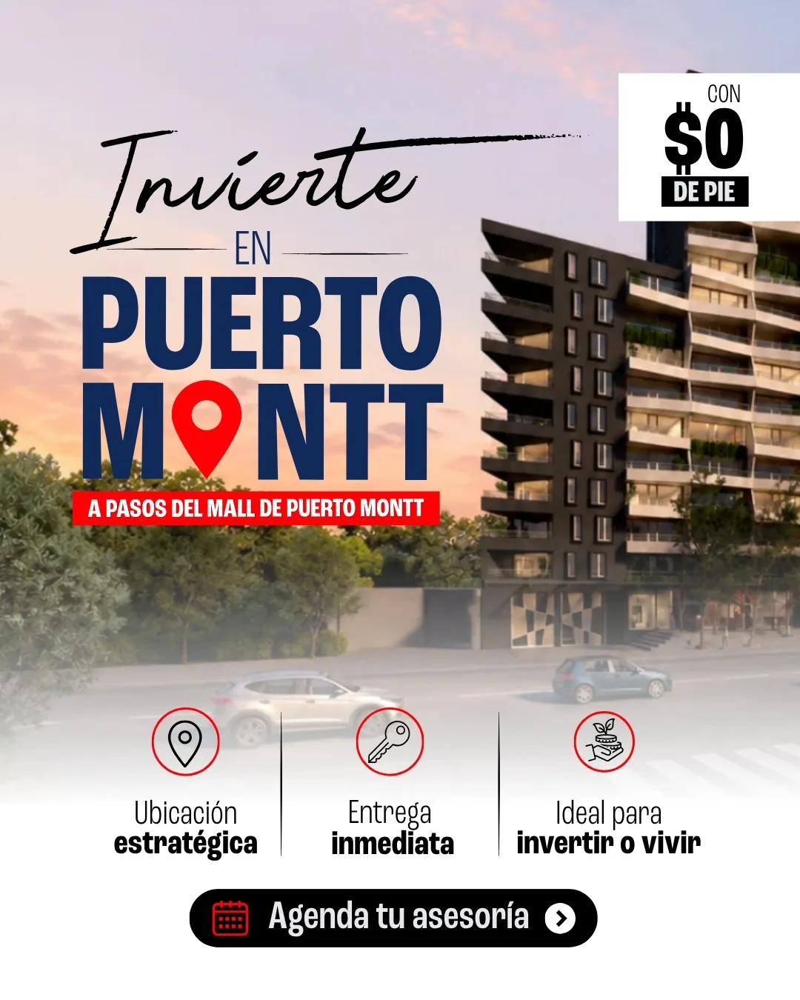
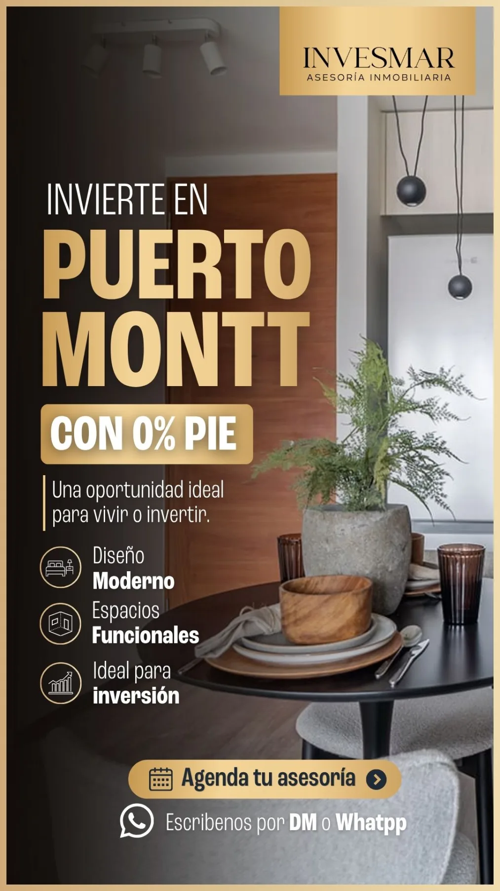
Más de 30 piezas diarias de ofertas laborales sobre el sistema visual de la marca, con entregas rápidas y consistencia total.
Ver gestión de redes ↗
Portfolio por categoría
Pasá el mouse por cada carta y entrá a ver el proyecto completo.
 01 · Diseño de piezas
01 · Diseño de piezas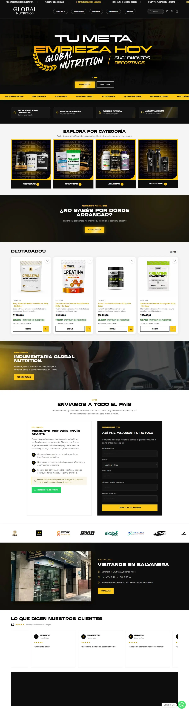
02 · Diseño web 03 · Packaging
03 · Packaging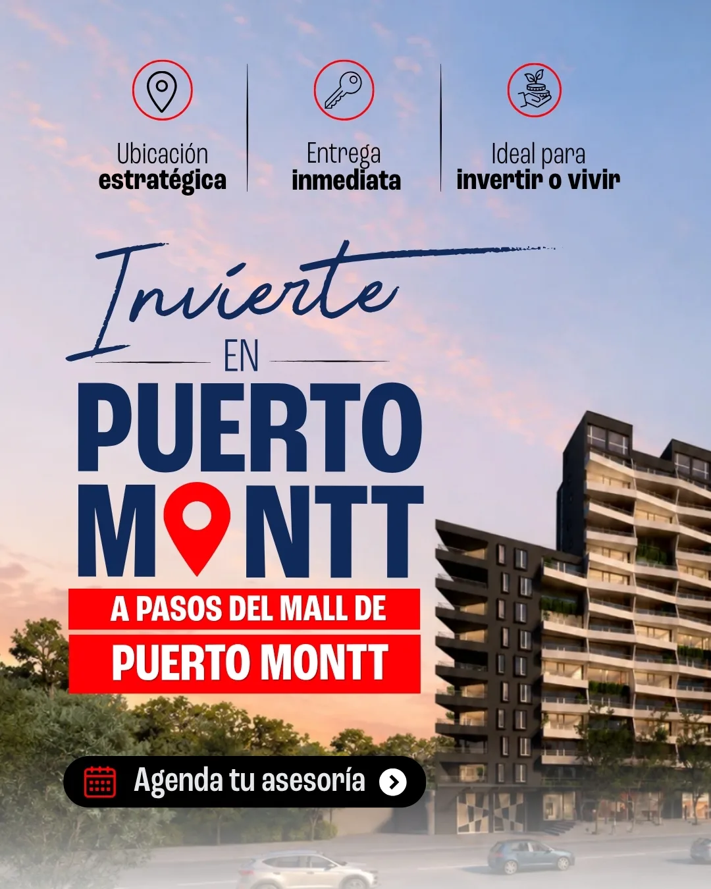
04 · Campañas Ads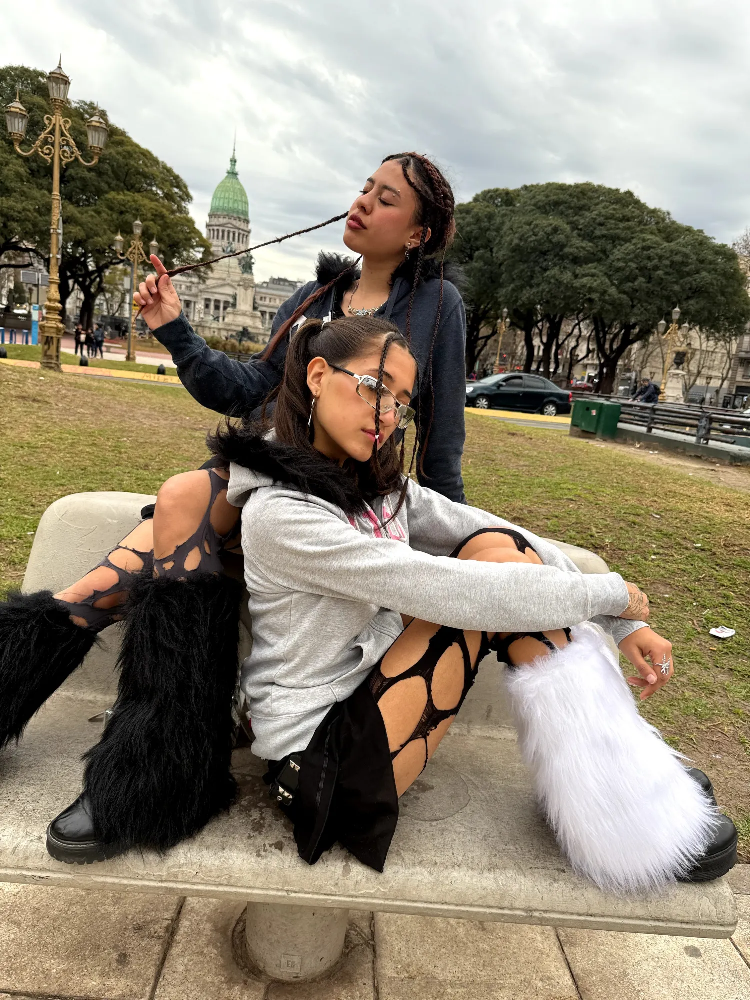
06 · FotografíaLo que dicen
“Llevamos más de tres años trabajando juntas y ha sido increíble ver su crecimiento profesional. Gracias a su trabajo, la imagen de mi empresa ha evolucionado muchísimo y hoy proyecta un aspecto mucho más profesional, moderno y confiable.”
“Se ha convertido en un pilar fundamental para el crecimiento de la generación de leads de la empresa. Gestiona varias campañas en distintas regiones de Chile cuidando la identidad de marca, sin perder de vista los números.”
“Tiene una gran capacidad para interpretar lo que necesitamos y transformarlo en piezas visuales atractivas, claras y alineadas con nuestra marca.”
“Ha hecho un gran trabajo comunicando los valores y la identidad de la marca con una mirada creativa e innovadora, cuidando siempre el detalle y la calidad gráfica.”